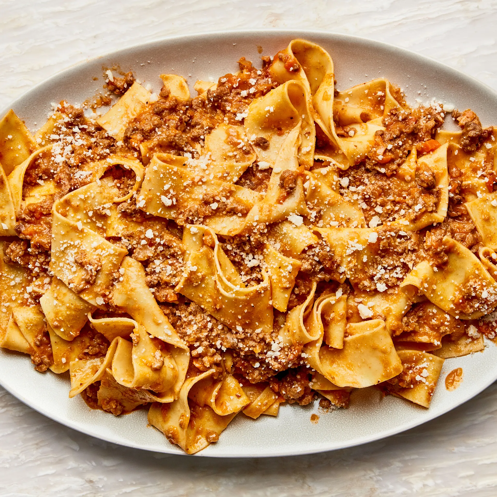

Bolognese

Description
Bolognese is a delicious meat sauce that goes well with any kind of pasta. It's one of
my wife's favorite Italian dishes.
It takes a while to make but it is worth every minute.
Ingredients
- 1 lb fresh pasta of your choice. I prefer tagliatelle.
- 1 medium onion, chopped
- 1 celery stalk, chopped
- 1 small carrot, peeled, chopped
- 1 lb ground beef chuck (20% fat), patted dry
- kosher salt
- 3 Tbsp extra virgin olive oil
- 3 oz thinly sliced pancetta, finely chopped
- 1 cup dry white wine
- 1/4 cup tomato paste
- 1 bay leaf
- pinch of nutmeg
- 2 cups or more of chicken stock
- 2 oz finely grate parmesan, plus more for serving
Steps
- Pulse onion, celery, and carrot in a food processor until very finely chopped
- Heat oil and add beef to pot. Break into small clumps and cook until slightly browned
- Wipe out pot and cook pancetta over medium heat until crispy and add oinoin mixture until vegetables are soft
- Return beef to pot and add white wine. Reduce heat to medium low and cook until wine is evaporated.
- Pour stock and milk into pot. Reduce to lowest heat setting and cook uncovered stirring occasionally until meat is very, very tender.
- Cook pasta and transfer to pot of sauce. Mix thoroughly.
- Transfer to plate, top with parmesan and enjoy!